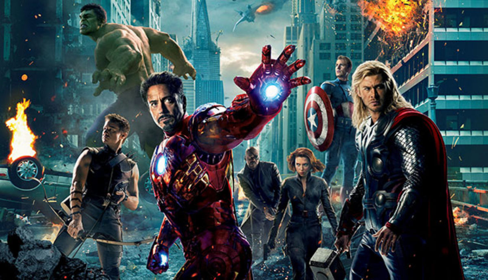

This is one of my favourite movies because the movie is all about magics stuff. I have watched this movie many times because of its story. Every part of this movie brings lots of joy and happiness for me.

This is one of my favourite series on Netflix. The series is completely sci-fiction. I like the story very much because its about a man who can run at the speed of light and he helps so many people since he is a hero in the series.
This movie is about a bunch of super heros who become one team to fight bad guys in order to protect Earth from chaos. Its also a sci-fiction movie. I like this movie very much because its funny, emotional and adventures.

I like this anime very much because of Goku. He is a character that inspires his enemies and evryone to become good and best version of themselves. i like this character so much because it never gives up no matter what the odds are. He pushes his limit to full thats why i like this anime so much.